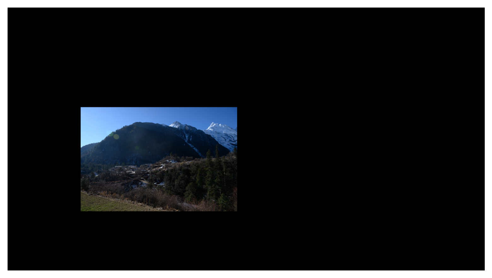
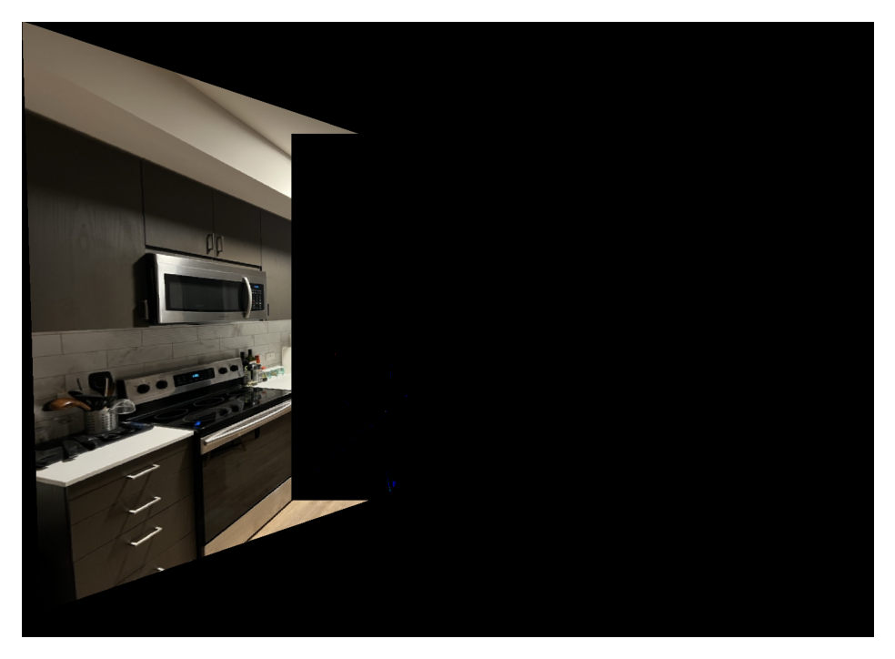

Part A
Shoot the Pictures
To prepare for this project, I have shot several sets of pictures for later steps. In each set, I setup several
correspondence points for each pair of pictures.
The first set is the beautiful San Francisco skyline during a clear night. I took the set with a camera on a long
focal length lens.
San Francisco Skyline
Correspondence 2-3

|

|
Village under Snow Mountain
The second set is a village under the beautiful mountain. I took this set with a wide angle lens.
 MT 1
MT 1
|
 MT 2
MT 2
|
MT 3
|
My Living Room
I took the third set randomly in my living room with my phone.
|
RM 1
|
 RM 2
RM 2
|
RM 3
|
Correspondence 1-2
|
|

|
Recover Homographies
To recover homographies, I need to find a matrix to perform projective mapping between correspondence points. The
matrix has 8 degrees of freedom and the lower right corner is set to 1 since all my images are taken with the same
focal length within the same set.
$$
H = \begin{bmatrix}
h_1 & h_2 & h_3 \\
h_4 & h_5 & h_6 \\
h_7 & h_8 & 1
\end{bmatrix}
$$
For each correspondence points $p'$ and $p$, I will have $p' = Hp$.
$$
\begin{bmatrix}
x' \\
y' \\
1
\end{bmatrix}
=
\begin{bmatrix}
h_1 & h_2 & h_3 \\
h_4 & h_5 & h_6 \\
h_7 & h_8 & 1
\end{bmatrix}
\begin{bmatrix}
x \\
y \\
1
\end{bmatrix}
$$
Expanding the matrix I have:
$$
\begin{aligned}
x' &= h_1 x + h_2 y + h_3 \\
y' &= h_4 x + h_5 y + h_6 \\
w' &= h_7 x + h_8 y + 1
\end{aligned}
$$
To set the scaling factor to 1, I normalized the result by the third row:
$$
x' = \frac{h_1 x + h_2 y + h_3}{h_7 x + h_8 y + 1}
$$
$$
y' = \frac{h_4 x + h_5 y + h_6}{h_7 x + h_8 y + 1}
$$
Simplify the result we have:
$$
h_1 x + h_2 y + h_3 - x' (h_7 x + h_8 y + 1) = 0
$$
$$
h_4 x + h_5 y + h_6 - y' (h_7 x + h_8 y + 1) = 0
$$
Write this result back to matrix form:
$$
\begin{align}
\begin{bmatrix}
-x & -y & -1 & 0 & 0 & 0 & x' x & x' y & x' \\
0 & 0 & 0 & -x & -y & -1 & y' x & y' y & y'
\end{bmatrix}&\begin{bmatrix}
h_1 \\
h_2 \\
h_3 \\
h_4 \\
h_5 \\
h_6 \\
h_7 \\
h_8 \\
1
\end{bmatrix} &= &0 \\
A&h &= &0
\end{align}
$$
To eliminate error, I set more correspondence points than the equation needed. When solving the matrix, I try to
get the minimum error solution. I use Singular Value Decomposition for $H$.
In SVD, we decomposite $A$ into three components.
$$
A = U \Sigma V^T
$$
The solution for $H$ is the last column of $V^T$. I reshape the last column to a $3\times3$ matrix. And normalized
the matrix based on the bottom right corner to retrive $H$.
Warp the Images
After I get the recovery matrix from correspondence points, I can simply use forward warpping to transform one image
into another by multiplying the coordinates with $H$. To map the original image into the new transformed image, I
use
scipy.interpolate.griddata to interpolate the color of the new coordinates. I also calculate the
the size of output image by the four corners of the new image.
To test the result of the warping function, I rectify some images to make parts of the images into a shape of
square.
TV into square
|
|

|
Road Sign into square

|
|
Blend Images into a Mosaic
Here comes the most interesting part of the project. I can finally blend the images into a single panorama. I use
the warping function to warp the images into the result shape. Then I compute their bounding box to decide their
position in the final image. Then I align each image based on their position.
At first I use a hard blending that directly put the three images into the final image.
 SF 1
SF 1
|
 SF 2
SF 2
|
 SF 3
SF 3
|
|
SF 1
|
 SF 2
SF 2
|
 SF 3
SF 3
|
|
MT 1
|
MT 2
|
MT 3
|
|

MT 1
|
MT 2
|
MT 3
|
 MT Pano
MT Pano
|
|
RM 1
|
RM 2
|
RM 3
|
|
RM 1
|

RM 2
|
 RM 3
RM 3
|
 RM Pano
RM Pano
|
The direct blending works fine for the first set of images. However, it's obvious that the panorama of the second
and third set did not blend smoothly. To create a smooth blending between images, I use the Laplacian multilayer
blending method from project 2. I use a gaussian filter to create a mask that smoothly merge the edge of two images
together.
 MT Pano Smooth
MT Pano Smooth
|
Part B
In this part, instead of manually defined correspondence points, I will implement the method to auto align images
and create the final mosaics. I will follow the paper
“Multi-Image Matching using Multi-Scale
Oriented Patches” by Brown et al to establish correspondence in a set of images. Then used the 4-point RANSAC
method to compute homography. At last, I will blend the image using the same method as part A.
Detecting Corners
For the first step of corner detection, I used the Harris Corner Detection algorithm. I used the sample code
get_harris_corners, where the Harris response is calculated by
skimage.feature.corner_harris and then pick local maxima as corners by
skimage.feature.peak_local_max.
As the algorithm is superlinear to number of corners in the images, I need to reduce the number of corners in order
to speed up the algorithm. I followed the section 3 of the paper to implement Adaptive Non-Maximal Suppression. To
perform ANMS, I calculated the pairwise distance using
dist2 from sample code. Then for each corner, I
calculated the suppression radius by the minimum distance for it to meet another strong corner (strong means a high
harris response value). Then I will sort the radii of corners and return the given number of points with the highest
radii values. By this suppression algorithm, the remaining points are strong and evenly-distributed.
|
RM1 Detected Corners
|
RM1 ANMS Detected Corners (300 points)
|
Feature Descriptor
In the next step, I extract the features of each corners so that they could be used in feature matching for the next
step. I used a patch of 8$\times$8 patch of pixels as the feature. I first sample a 40$\times$40 window around the
corner and then use gaussian filter to blur the window. Then I call
cv2.resize to resize the window
into a 8$\times$8 patch of windows. Lastly, I normalized the patch as the feature for the corner.
|
Sample Feature Descriptor 1
|
Sample Feature Descriptor 2
|
Sample Feature Descriptor 3
|
Feature Matching
Following the section 5 of the paper, I implement the feature matching to match the correspondence corners. I first
calculate the distance between two set of descriptor by the norm of difference. By Lowe of thresholding, for a descriptor, if the distance of
the closest descriptor is under a ratio of the distance of the second closest descriptor, then the two corners match.
|
Matching corners between SF1 and SF2
|
|
Matching corners between SF2 and SF3
|
RANSAC
I used the standard 4-point RANSAC method to compute a homography estimate. In the RANSAC loop, the algorithm will calculate:
1. Select four feature pairs (at random)
2. Compute homography $H$ using the method from first part.
3. Compute the warpped points and determine inliers where $dist(p_i',Hp_i)<\varepsilon$.
4. Keep the largest set of inlier
After the loop finishes, recompute H estimate on all of the inliers.
|
Inliers for $Hp_i$(green), $p_i'$(red) on SF2
|
Auto Mosaic
Integrating all the methods, I can perform auto mosaics by simply passing in images.
SF
|
SF Autostitching
|
|
SF Manual Stitching
|
MT
|
MT Autostitching
|
|
MT Manual Stitching
|
RM
|
RM Autostitching
|
|
RM Manual Stitching
|